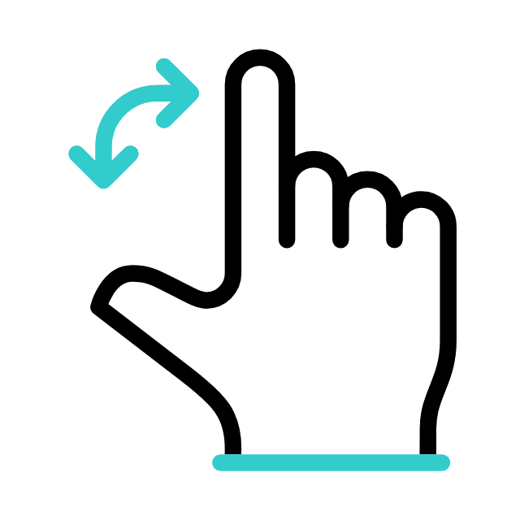

Discover Synaesthesia
Here you can find out all you need to know about Synaesthesia.
What is Synaesthesia?

Synaesthesia is...
INVOLUNTARY
ADDITIVE
IDIOSYNCRATIC
CONSISTENT
Hover to learn more.
How do synaesthetes and non-synaesthetes differ?

A brief history of Synaesthesia
1812
The first known documented case of Synaesthesia appears in a doctural thesis by Georg Tobias Ludwich Sachs:
Sachs also had colours for numbers:
→
0
Pale Yellow
1
Definitely white
2
No distinct colour
3
Ash-grey
4
Vermilion
5
Yellow
6
Indigo
7
Bluish Grey
8
Brown
9
Dark Green
Some other types that Sachs described in his thesis:
Try rotating the objects... 
 Cities around the world
Cities around the world1848
Charles-Auguste-Edourd Cornaz coins the term
"Hyper Sensation"
(Perception of too many colours)
1881:
"Secondary Sensations"
Blueler and Lehmann discovered 6 types of Synaesthesia:
[Icons will all be custom-made and related to variant; background changes on hover]
Blueler and Lehmann found a 12.8% prevalance rate amongst 596 study participants, contrary to our current 4%.
They showed that Synaesthesia was not related to mental illness and landed on the term "Secondary Sensations" in an attempt to stay neutral.
[infographic-type section]